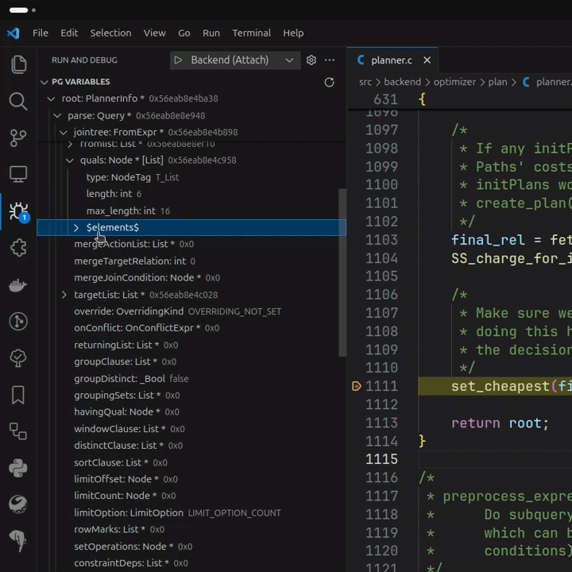

PostgreSQL Hacker Helper

This is a VS Code extension to assist PostgreSQL Hackers - source code developers.
Features
Extension integrates with VS Code and provides several different functionalities.
PostgreSQL Variables exploring
During debug session separate view PG Variables shows contents of variables with special handling of PostgreSQL related variables:
- View
Node *variables with real type according toNodeTag - Get the contents of container types:
List *,HTAB *,Bitmapset * - Known array variables are rendered as normal arrays
- Render
Exprnodes by the original expression - Show integer enums as enum values, not integers
- Render some scalar types according to their semantics:
bitmapwordXLogRecPtrRelFileLocator
- Show attribute values of
TupleTableSlot

You can define your own custom types, i.e. your own array variable using configuration file.
Formatting
For C files you can use custom formatter which uses pgindent for formatting.
The extension will download and built any required files if needed - you do not have to do anything.

postgresql.conf syntax support
PostgreSQL configuration file custom syntax is supported.
This is an add-on to the standard configuration file syntax with support for units (i.e. kB or s) and highlighting of quoted values.

Extension bootstrapping
For fast extension creation you can use command Bootstrap extension that will create all templated files, so you do not have to create ones.